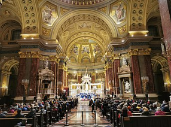
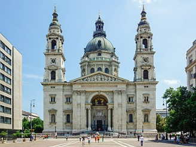
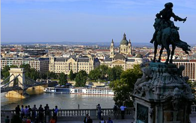

A mai bazilika helyén a 18. században Heccszínház állt, mely állatviadaloknak adott helyet. Az akkoriban kialakult új városrész, a Lipótváros egyik gazdag polgára, Zitterbarth János hamarosan kis, ideiglenes templomot építtetett ide. 1817-ben mintegy ezer hívővel megalakult a lipótvárosi plébánia, és ezzel felmerült az igény arra, hogy Lipótvárosnak saját, komoly plébániatemploma legyen. Ekkor indult meg a gyűjtés, és több terv is készült a jövőbeni templomról. A bazilika tényleges megépítésére az 1838-as nagy árvíz szolgáltatott indokot. A mai Szent István tér közepe egy kis, természetes kiemelkedést képezett a sík pesti területen, amelyen több száz lakos talált menedéket a víz sodrása elől, amíg csónakokkal kimentették őket. Az árvíz túlélői fogadalmi adományokkal támogatták, hogy csodálatos megmenekülésük helyszínén templom épüljön.

A Szent István-bazilika a főváros harmadik legmagasabb épülete a Mol Campus és az Országház után, míg országos viszonylatban Magyarország negyedik legmagasabb épülete. Az épület magassága 96 méter, hossza 87,4 méter, szélessége 55 méter. Befogadóképessége nyolcezer fő.
A Hild József által elkészített eredeti, klasszicista tervek szerint a bazilika a mainál zártabb, tömörebb épület lett volna, amelynek nyugati főhomlokzatát korinthoszi oszlopos portikusz, oldalait pedig négy-négy hatalmas pillér zárta volna le. A bazilika Ybl Miklós újragondolása nyomán nyerte el ma ismert formáját, amely az eredetihez képest főleg a homlokzati rész kialakításában mutat jelentős eltérést. Az óriási, félkörös fülkével széthúzott homlokzati tornyok közötti, tágas előtéren keresztül lehet bejutni az épületbe.

A Szent István király bazilika társszékesegyház (németül: St.-Stephans-Basilika, ismert még mint Lipótvárosi plébániatemplom), egy neoreneszánsz stílusú basilica minor rangú székesegyház Budapest V. kerületében, Lipótvárosban. Ez Magyarország egyik legjelentősebb egyházi épülete, az Esztergom-Budapesti főegyházmegye társszékesegyháza az Esztergomi bazilika mellett. Az épület névadója a magyar államalapító király, Szent István, akinek épségben maradt jobb kezét, a Szent Jobbot ereklyeként itt őrzik. 96 méteres magasságával az ország egyik legmagasabb, a Mol Campus és az Országház után a főváros harmadik legmagasabb épülete.
